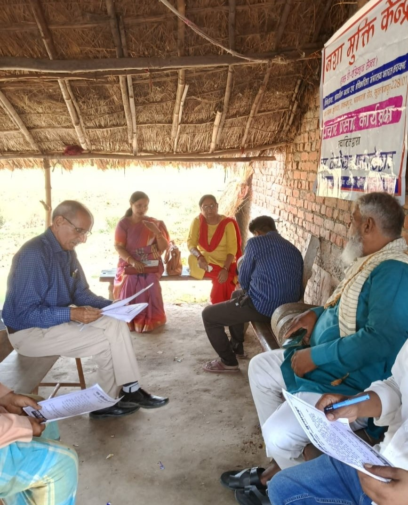

🔸Social Welfare & Public Support Services🔸Community Development & Empowerment Programs🔸Social Justice & Rehabilitation Support🔸Creating Positive Change Through Compassionate Care
TESTIMONIALS
Stories of Hope & Recovery

Families Trust The Journey
हमारे लिए हर सुधार की कहानी उम्मीद की नई रोशनी है। मरीज और परिवारों को बेहतर जीवन की तरफ ले जाना ही हमारी सबसे बड़ी उपलब्धि है।
यहां मिले सहयोग और देखभाल ने कई लोगों के जीवन में सकारात्मक बदलाव लाया है, और यही हमारे काम की असली सफलता है,
क्योंकि हम न केवल नशा मुक्ति की दिशा में काम कर रहे हैं, बल्कि एक नई शुरुआत और बेहतर भविष्य की ओर भी बढ़ रहे हैं।
“यहाँ मिले सहयोग, अनुशासन और काउंसलिंग ने जीवन में नई दिशा दी। मैं अब नशा मुक्त होकर अपने परिवार के साथ खुशहाल जीवन जी रहा हूँ।”
मरीजों के अनुभव | Recovery Testimonials
विजय प्रताप, सुल्तानपुर
पहले मुझे ऐसा लगता था कि नशे की वजह से मेरा जीवन पूरी तरह खत्म हो चुका है। परिवार भी मुझसे परेशान रहने लगा था। यहाँ आकर मुझे सही काउंसलिंग, अनुशासन और मानसिक सहयोग मिला। धीरे-धीरे आत्मविश्वास वापस आया और आज मैं सामान्य जीवन जी पा रहा हूँ। इस केंद्र ने मुझे नई शुरुआत दी।
संतोष, सुल्तानपुर
मैं कई वर्षों से शराब की लत से परेशान था और स्वास्थ्य भी लगातार खराब हो रहा था। यहाँ के डॉक्टरों और स्टाफ ने बहुत धैर्य और सम्मान के साथ मेरा मार्गदर्शन किया। योग, ध्यान और नियमित काउंसलिंग से मेरे अंदर सकारात्मक बदलाव आया। अब मैं अपने परिवार के साथ खुशहाल जीवन जी रहा हूँ।
राम अवध, सुल्तानपुर
नशे की वजह से मैं समाज और परिवार दोनों से दूर हो गया था। इस केंद्र में मुझे ऐसा वातावरण मिला जहाँ किसी ने मुझे गलत नजर से नहीं देखा। हर दिन मिलने वाली प्रेरणा और सहयोग ने मुझे मानसिक रूप से मजबूत बनाया। आज मैं आत्मनिर्भर बनने की दिशा में आगे बढ़ रहा हूँ।
रिशी धुरिया, सुल्तानपुर
पहले मुझे विश्वास नहीं था कि मैं कभी नशा छोड़ पाऊँगा। लेकिन यहाँ की नियमित दिनचर्या, डॉक्टरों की सलाह और परिवार जैसी देखभाल ने मेरी सोच बदल दी। धीरे-धीरे मेरी आदतों में सुधार आया और जीवन के प्रति सकारात्मक दृष्टिकोण विकसित हुआ। अब मैं पूरी तरह नशा मुक्त जीवन की ओर बढ़ चुका हूँ।
राजेश कुमार, सुल्तानपुर
मैं मानसिक तनाव और गलत संगति के कारण नशे का शिकार हो गया था। इस केंद्र में आने के बाद मुझे समझ आया कि सही मार्गदर्शन कितना जरूरी होता है। यहाँ की टीम ने हर समय मेरा उत्साह बढ़ाया और मुझे नई उम्मीद दी। आज मैं अपने परिवार और समाज के साथ सम्मानपूर्वक जीवन जी रहा हूँ।
कैप्टन, सुल्तानपुर
नशे के कारण मेरे रिश्ते और काम दोनों प्रभावित हो चुके थे। यहाँ मिलने वाली थेरेपी और सकारात्मक वातावरण ने मुझे अंदर से बदल दिया। स्टाफ का व्यवहार बहुत सहयोगपूर्ण और प्रेरणादायक रहा। अब मैं पहले से ज्यादा आत्मविश्वासी महसूस करता हूँ और अपने भविष्य को बेहतर बनाने की कोशिश कर रहा हूँ।
अभिषेक, सुल्तानपुर
जब मैं यहाँ आया था तब मेरे अंदर उम्मीद लगभग खत्म हो चुकी थी। लेकिन यहाँ की देखभाल, नियमित काउंसलिंग और मानसिक समर्थन ने मुझे धीरे-धीरे मजबूत बनाया। मुझे जीवन को नए तरीके से समझने का अवसर मिला। आज मैं स्वस्थ जीवन जी रहा हूँ और दूसरों को भी नशे से दूर रहने की सलाह देता हूँ।
लालजी, सुल्तानपुर
यह केंद्र मेरे लिए एक नई शुरुआत साबित हुआ। यहाँ के अनुशासन, योग और सकारात्मक वातावरण ने मेरे जीवन में बड़ा बदलाव लाया। पहले मैं हर समय निराश रहता था, लेकिन अब मैं अपने परिवार के साथ खुश हूँ और समाज में सम्मान के साथ आगे बढ़ रहा हूँ। यहाँ का सहयोग हमेशा याद रहेगा।
🔒
“Trust grows when real experiences speak with honesty.”